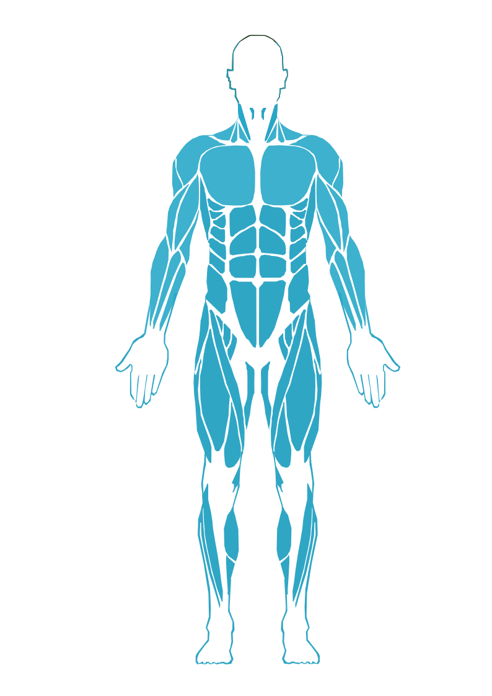

"Descubre La Fuerza De Tus Musculos"
La importancia del ejercicio con rutinas adecuadas
Realizar ejercicio con rutinas adecuadas es fundamental para mantener una buena salud física y mental. El ejercicio regular puede ayudar a prevenir enfermedades crónicas, mejorar la función cardiovascular, aumentar la fuerza y la flexibilidad muscular, y reducir el estrés y la ansiedad.
Beneficios físicos del ejercicio
- Mejora la función cardiovascular: El ejercicio regular puede ayudar a reducir la presión arterial, mejorar la circulación sanguínea y aumentar la capacidad del corazón para bombear sangre de manera eficiente.
- Aumenta la fuerza y la flexibilidad muscular: El ejercicio de resistencia y la flexibilidad pueden ayudar a mejorar la función muscular y reducir el riesgo de lesiones.
- Mejora la salud ósea: El ejercicio con peso puede ayudar a mejorar la densidad ósea y reducir el riesgo de osteoporosis.
- Ayuda a controlar el peso: El ejercicio regular puede ayudar a quemar calorías y mantener un peso saludable.
Beneficios mentales del ejercicio
- Evita lesiones: Las rutinas adecuadas pueden ayudar a evitar lesiones al permitir que el cuerpo se adapte gradualmente al ejercicio.
- Mejora la eficacia: Las rutinas adecuadas pueden ayudar a mejorar la eficacia del ejercicio al enfocarse en los objetivos específicos de cada persona.
- Aumenta la motivación: Las rutinas adecuadas pueden ayudar a aumentar la motivación al proporcionar un sentido de logro y progreso.